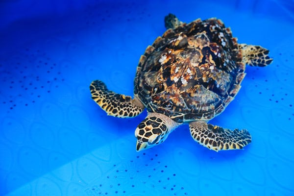

About Hawksbill Sea Turtles
Hawksbill sea turtles are a critically endangered species that inhabit tropical and subtropical waters around the world. They are named for their distinctive beak-like mouth and pointed hawk-like beak. Hawksbills are known for their beautiful shells, which have long been used to make jewelry and decorative items.
Habitat
Hawksbill sea turtles can be found in coral reefs, lagoons, and shallow coastal areas. They are primarily herbivores, feeding on sponges, algae, and other marine plants. These turtles play a vital role in maintaining the health of coral reef ecosystems.
Conservation
Hawksbill sea turtles are critically endangered due to habitat destruction, pollution, and illegal hunting. Conservation efforts focus on protecting nesting beaches, implementing sustainable fishing practices, and raising awareness about the importance of preserving these magnificent creatures and their fragile habitats.